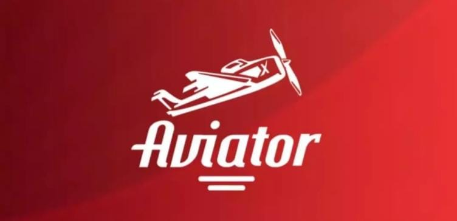
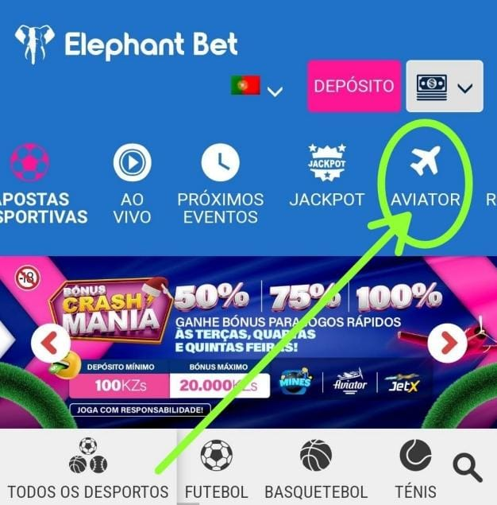
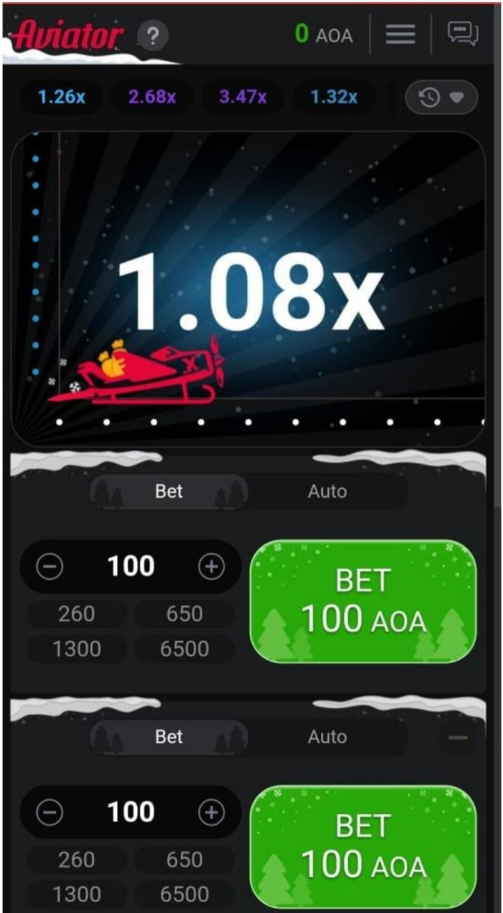

Início » Ajuda » COMO JOGAR AVIATOR?
Aviator: É um jogo Crash muito popular da nova geração, apresentando um avião decolando em uma curva crescente, que pode terminar a qualquer momento. O objetivo do jogo Aviator é resgatar o máximo de dinheiro possível antes que o avião sorteado decole, com uma série de recursos sociais interativos que tornam a experiência emocionante para todos os envolvidos! Faça login na sua conta da Elephant Bet para jogar o jogo Aviator.
1- Acesse ao site da Elephant Bet e faça login ou crie uma conta;
2- Em seguida, abra o jogo através da seção de Aviator como na imagem abaixo
3- Na primeira tela, você verá um grande botão de cor verde escrito “Aposta" ou “Bet”. Ao lado dele, há uma caixa com “1.00 - +”. Esse é o valor base para apostar, mas você pode colocar valores maiores ou menores conforme sua vontade;
4- Aperte em “Apostar” ou BET para entrar na rodada;
5- Por fim, aperte em “Cash out” no mesmo botão para encerrar a aposta antes do avião partir.
Agora, vamos falar sobre as funções que tornam o jogo mais interessante. A principal é o “Autojogo”, que permite participar automaticamente de cada rodada.
Por ela, você pode configurar como o sistema deve lidar com suas apostas. Em resumo, é possível configurar:
- Valor de ganhos para interromper as apostas;
- Limite de perdas para interromper as apostas;
- Valor apostado automaticamente em cada aposta;
- Número que o jogo deve atingir para o cash-out ser ativado automaticamente.
No lado esquerdo há uma lista com todos os participantes e seus ganhos. Já na parte de cima, é possível ver o histórico de rodadas, com todos os números que o avião atingiu antes de pousar.
Ambas as funções ajudam a ver quais são os ganhos possíveis, já que mostram resultados reais de quem está jogando naquele momento.
Uma dica importante: Saiba o momento de ativar o cash-out
Um grande erro da maioria dos apostadores é deixar o avião ir o mais longe possível. Na maioria das vezes, isso resulta em derrota, já que é impossível prever quando ele vai pousar.